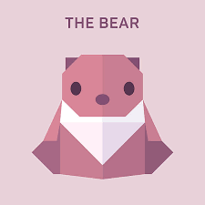

FOLLOW US
ABOUT US
THESE ARE SOME ORIGAMI DESIGNS

Camel origami
- Camels have three sets of eyelids and two rows of eyelashes to keep sand out of their eyes.
- Camels can completely shut their nostrils during sandstorms.
- When a camel finally does find water, he can drink up to 40 gallons in one go.

Chameleon origami
- Almost Half Of The World's Chameleon Species Are Native To Madagascar
- Chameleons Have Almost 360 Degree Vision
- Chameleons Have Zygodactylous Toes

Pigeon origami
- THEY CAN FIND THEIR WAY BACK TO THE NEST FROM 1300 MILES AWAY.
- THEY SAVED THOUSANDS OF HUMAN LIVES DURING WORLD WARS I AND II.
- DODOS WERE RELATED TO TODAY'S PIGEONS.

Teddy-Bear origami
- The official term for a teddy bear collector is an ‘arctophile’.
- The world's smallest stitched teddy bear is a mere 0.29 inches tall!
- Teddy bears got their name from the story that Teddy Roosevelt refused to shoot a bear cub while on a hunting trip in 1902.

Panda origami
- Giant Pandas Are Good At Climbing Trees And Can Also Swim.
- An Adult Can Eat 12–38 Kilos Of Bamboo Per Day!
- Pandas Have Carnivorous Teeth, But They Eat Bamboo And Fruit.

Flying-Cicada origami
- MOST HAVE RED-ORANGE EYES. BUT OCCASIONALLY CICADAS HAVE BLUE, WHITE OR GRAYISH EYES.
- THE LOUD WHIRRING OR BUZZING SOUND YOU HEAR IS AN ALL-MALE CICADA CHORUS.
- CICADAS ARE LIKE TINY VIOLINS